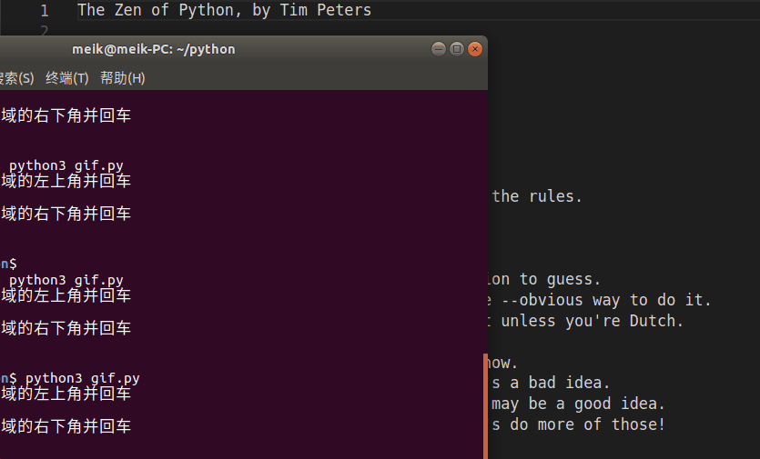
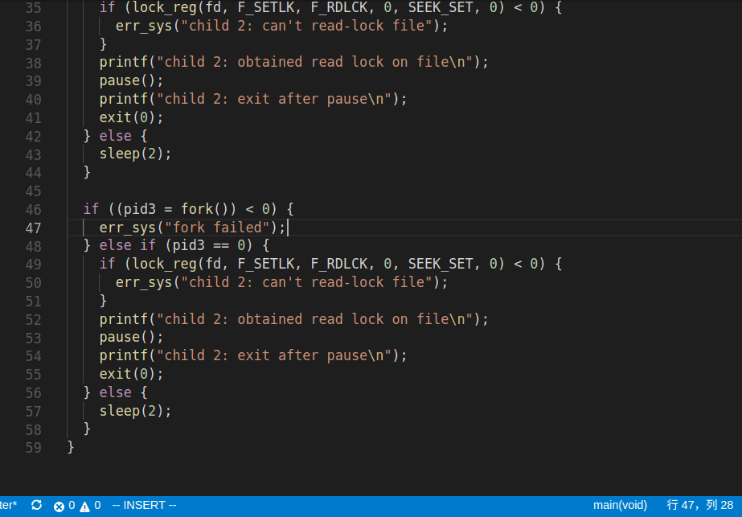

贴几个我自己平时使用 vim 时的需求和解决方案
在一个文件中的每一行前后添加 "
解决方案
1 | <esc>gg<c-v>GI"<esc><c-v>G$A",<esc> |

解析
<esc>gg, 进入编辑模式且定位至文件开头<c-v>, 代表ctrl + v,选择区域块G, 使区域块包含到文件最后一行I", 在光标前插入", 注意: 在区域选择模式下, 只能使用I和A,i和a没有效果<esc><c-v>G$A",, 类似 1 - 4, 使用$移动到行尾,A在光标后插入<esc>, 回到Normal模式
指定区间替换字符串
解决方案
1 | <esc>:46<enter>v12<enter>:s/<from>/<to>/g |

解析
<esc>:46<enter>, 移动到区间开头v12<enter>, 区间选择, 到 12 行之后:, vim 自动补全为:'<,'>s/<from>/<to>/g, 指定字符串, 全部替换. 注意: from 字符串为正则表达式